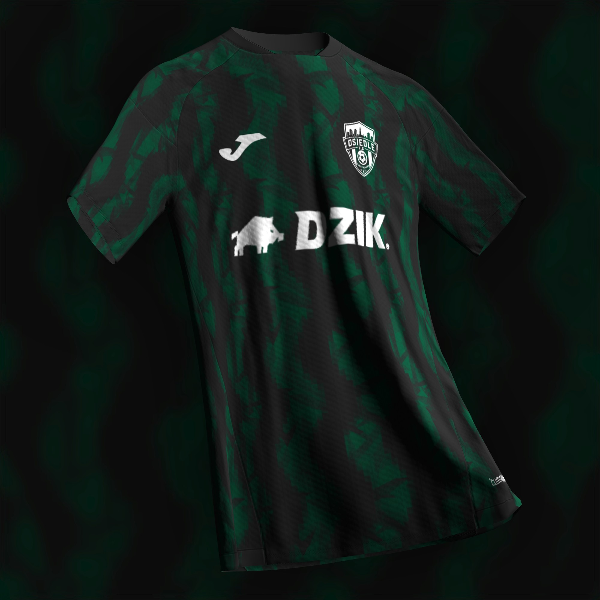

2022
Początek na Kawodrzy Dolnej
Powstaje Osiedle F.C. — lokalny klub z Częstochowy, którego tożsamość od pierwszego dnia opiera się na zielono-czarnych barwach.

Zielono-czarna drużyna z Częstochowy. Klub z osiedla, z własnym charakterem i historią budowaną od 2022 roku.

Osiedle F.C. powstało w 2022 roku na Kawodrzy Dolnej w Częstochowie. Od początku klub budowany jest wokół prostych wartości: wspólnoty, ambicji i grania po swojemu. Zielono-czarne barwy są znakiem rozpoznawczym drużyny, a herb łączy piłkę, panoramę miasta i lokalną tożsamość.
Jedenastka ustawiona w systemie z trójką środkowych obrońców, wahadłami i trójką ofensywną.
Czerń daje bazę, a głęboka zieleń wyciąga charakter herbu i tworzy mocny, nowoczesny wygląd.
Wzór oparty na czarnym fundamencie z dynamiczną zieloną grafiką. Białe elementy — herb, logo Joma i sponsor — tworzą mocny kontrast i zachowują czytelność.
Krótka oś czasu najważniejszych punktów w historii klubu.
Powstaje Osiedle F.C. — lokalny klub z Częstochowy, którego tożsamość od pierwszego dnia opiera się na zielono-czarnych barwach.
Drużyna tworzy swój styl, skład i klubową kulturę. Coraz mocniej wybrzmiewa idea, że Osiedle F.C. ma być czymś więcej niż tylko nazwą na koszulce.
Damian Matysiak, Szymon Pydzik, Daniel Pędzik, Przemek Michalik, Jakub Piekarz, Kacper Krzyszkowski, Oskar Biurkowski, Filip Gaudy, Wojciech Roznowski, Mateusz Roznowski i Fabian Bejm tworzą historyczny skład klubu.
Osiedle F.C. pozostaje klubem zakorzenionym lokalnie — w Kawodrzy Dolnej, w Częstochowie i w ludziach, którzy tworzą jego historię.